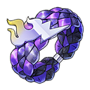
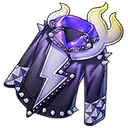

추천 광추
은하철도의 밤
적 수만큼 공격력 · 격파 후 피해
효과 자세히
필드 적 1기당 공격력 +9%, 최대 +45%. 적 약점 격파 시 피해 +30% 1턴.
멈추지 않는 연산
공격력 +12% · 광역 공격 가속
효과 자세히
명중 적 1기당 공격력 +8%, 최대 +40%. 3기 이상 명중 시 속도 +16% 1턴.
천재들의 휴식
공격력 +32% · 처치 후 치피 +48%
효과 자세히
자신이 적을 처치하면 치피 버프 3턴.
동트기 전
치피 +36% · 추가 공격 +48%
효과 자세히
스킬·필살기 피해 +18%. 사용 후 몽신 획득 → 다음 추가 공격 피해 +48%.
영험한 열쇠
전투 스킬 → 에너지 +12pt
효과 자세히
턴당 1회.
추천 유물
뇌전을 울리는 밴드 4 · 창공 전선 그라모스 2
- 머리 주옵션HP부옵션치명타 확률 · 치명타 피해 · 속도 · 공격력%
- 손

주옵션공격력부옵션치명타 확률 · 치명타 피해 · 속도 · 공격력% - 몸통

주옵션치명타 확률 / 치명타 피해부옵션치명타 확률 (주옵션 제외) · 치명타 피해 (주옵션 제외) · 속도 · 공격력% - 다리
 주옵션속도부옵션치명타 확률 · 치명타 피해 · 공격력%
주옵션속도부옵션치명타 확률 · 치명타 피해 · 공격력% - 구체
 주옵션번개 속성 피해부옵션치명타 확률 · 치명타 피해 · 속도 · 공격력%
주옵션번개 속성 피해부옵션치명타 확률 · 치명타 피해 · 속도 · 공격력% - 매듭
 주옵션공격력%부옵션치명타 확률 · 치명타 피해 · 속도
주옵션공격력%부옵션치명타 확률 · 치명타 피해 · 속도
이 조합을 추천하는 이유
밴드 스킬 후 공격력 +20% · 번개 피해 +10%. 그라모스 전투 속도 135/160 → 피해 +12%/+18%.
밤낮의 경계를 나는 매 4 · 생명의 바커 공 2
- 머리
 주옵션HP부옵션속도 · 치명타 확률 · 치명타 피해 · HP% · 방어력% · 효과 저항
주옵션HP부옵션속도 · 치명타 확률 · 치명타 피해 · HP% · 방어력% · 효과 저항 - 손
 주옵션공격력부옵션속도 · 치명타 확률 · 치명타 피해 · HP% · 방어력% · 효과 저항
주옵션공격력부옵션속도 · 치명타 확률 · 치명타 피해 · HP% · 방어력% · 효과 저항 - 몸통
 주옵션치명타 확률 / 치명타 피해부옵션속도 · 치명타 확률 (주옵션 제외) · 치명타 피해 (주옵션 제외) · HP% · 방어력% · 효과 저항
주옵션치명타 확률 / 치명타 피해부옵션속도 · 치명타 확률 (주옵션 제외) · 치명타 피해 (주옵션 제외) · HP% · 방어력% · 효과 저항 - 다리
 주옵션속도부옵션치명타 확률 · 치명타 피해 · HP% · 방어력% · 효과 저항
주옵션속도부옵션치명타 확률 · 치명타 피해 · HP% · 방어력% · 효과 저항 - 구체
 주옵션HP% / 방어력%부옵션속도 · 치명타 확률 · 치명타 피해 · HP% (주옵션 제외) · 방어력% (주옵션 제외) · 효과 저항
주옵션HP% / 방어력%부옵션속도 · 치명타 확률 · 치명타 피해 · HP% (주옵션 제외) · 방어력% (주옵션 제외) · 효과 저항 - 매듭
 주옵션에너지 회복효율부옵션속도 · 치명타 확률 · 치명타 피해 · HP% · 방어력% · 효과 저항
주옵션에너지 회복효율부옵션속도 · 치명타 확률 · 치명타 피해 · HP% · 방어력% · 효과 저항
이 조합을 추천하는 이유
매 필살기 후 행동 게이지 +25%. 바커 공 회복효율 +5% · 속도 120 → 첫 행동 당김.
이 정도면 잘 키웠다
동일 파티·광추 기준 · 조건 [*]
| 스탯 | 추천 스탯 | 준종결 | 종결 |
|---|---|---|---|
| 치명타 확률 · 피해 [*] 번개 딜러 세팅. 해독 지원에서는 속도·회복효율 우선. | 65% / 130% | 75% / 150% | 치확 75% 이상 · 치피 추가 |
| 속도 [*] 160은 열쇠·매·회복효율 매듭을 쓰는 더 헤르타 편성 목표. | 134+ | 143+ | 회전 특화 160+ |
| 공격력 [*] 딜러 세팅 기준. | 2,200+ | 2,600+ | 2,600+ 유지 · 치피 보강 |
육성 단계의 기준
캐릭터·광추 Lv.80 · 5성 유물 +15. 발동 조건은 명시한 수치, 그 외는 육성 목표.
성혼과 추천 돌파
2돌 특성 에너지 · 4돌 필살기 감전 · 6돌 감전 적 추가 피해.
1일반 공격 → 인접 적 1기 추가 타격
일반 공격 피해 60% 번개 피해.
2특성 추가 피해마다 에너지 +4pt추천
앵콜!
3전투 스킬 +2 · 일반 공격 +1
스킬·일반 공격 레벨 상한 각각 15·10.
4필살기로 감전 부여추천
감전되지 않은 적에게 기본 확률 100%로 스킬과 같은 감전.
5필살기·특성 +2
필살기·특성 레벨 상한 각각 15.
6감전된 적에게 본인 피해 +30%추천
천공을 가르는 노래!
추천 파티


기본 운영과 행적
감전을 걸고 필살기로 연장
전투 스킬로 감전 부여 → 필살기로 감전 유지 → 감전 적 공격 시 특성 추가 피해.
- 더 헤르타와 함께라면 회복효율 매듭·열쇠·매로 광역 공격 횟수를 늘려 해독 지원.
행적 육성 순서
전투 스킬 → 특성 → 필살기 → 일반 공격
- 해독 지원형은 주요 행적과 회전 장비 우선.
기준과 출처 · 2026-11-25
4.7 데이터 · Prydwen 장비 참고 · 자료실 편성 예시